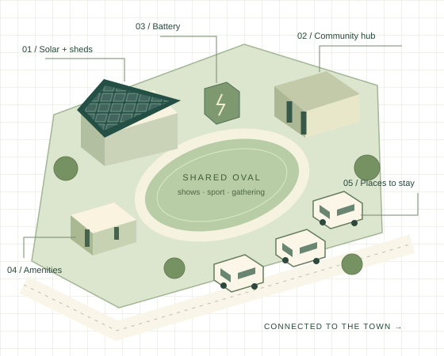

civics.au / An open civics initiative
Civics, from
the ground up.
A connected set of open proposals: places to land for people in transition, the infrastructure communities need to host them, and digital plumbing that keeps the exchange fair and accountable.
From “How am I going to survive today?”
to “What am I going to do today?”

The philosophy: solarpunk
Radical optimism · Energy democracy · Community resilienceThe outlook behind all of it is solarpunk: a radically optimistic vision of a sustainable, egalitarian future where humanity, nature and technology coexist—rejecting climate fatalism in favour of building the alternative. Its working principles are the same as this project's: non-exploitative, usury-free social foundations; decentralised renewable energy; cooperative community strength. The grounds, microgrids, knowledge banks and cooperative projects are that philosophy made concrete—the full statement and its mapping to deployments is on the idea page.
The moving parts
Separate components, one ecosystemThe Walkabout Strategy
For participants: a supported pathway into a second-hand home on wheels—suitability, costs, repairs and somewhere legal to stay.
The personal pathway ↗Fit-out & budget planner
Compare campervan, camper-trailer and caravan setups; check towing weight, payload and berths; cost the fit-out and weekly budget.
Open the planner ↗Community grounds
For communities: upgraded regional showgrounds with amenities, solar, connectivity and workshops—funded by generative infrastructure, not extraction.
The shared place ↗Concession credentials
A digital concession card concept: attribute-based verifiable credentials that prove eligibility without exposing identity or history.
The entitlement layer ↗Solid databox
Organisation-run secure data vaults connecting to people's own pods—the exchange layer of a local knowledge bank, with modules for websites, point-of-sale and devices, on W3C Solid.
The exchange layer ↗Knowledge banks
A network of community cooperatives—each running its own—providing the shared machinery: data vaults and safe deposit boxes for information, backups, continuity and probate, under a fiduciary duty to members who stay principals of their own records.
The institution ↗Modelling lab
The project financial model plus solar/battery and water/thermal estimators—run it in the browser, adjust assumptions, export a PDF report.
Open the lab ↗Opportunities
Applications the foundations unlock—starting with a cooperative food & health evidence map served through databox-enabled businesses.
The opportunity areas ↗How the parts connect
Each piece exists alone; together they compoundA cell structure: each community runs the same pattern at whatever stage it can reach—from a single ground to a networked region. The shared standards are what let the cells connect.
The modelling lab sits across all of it: the financial model, energy and water maths that any community or applicant can test against their own assumptions.
What this site is
A concept collection, not a productcivics.au gathers a set of related, open proposals under one roof. They share a single premise: that resilience is built from practical, community-scale infrastructure—physical and digital—designed to restore agency rather than extract rent. The site is a working document, not a deployed service: pages lay out the reasoning, the economics and the open questions so communities, councils and participants can evaluate and adapt them. The digital half of the project answers a subtler homelessness—most people own no part of the digital spaces their lives already run through.
If any of the language ever gets technical, the In plain terms section explains the same ideas in ordinary words, with a plain-language glossary. It is organised by who you are. Participants—people considering a home on wheels—start with the Walkabout Strategy and the fit-out planner. Communities—grounds, councils, trusts—start with the community grounds concept and the infrastructure and economics behind it. Underneath both sit shared components: credential and data-exchange plumbing, and a modelling lab where every number can be tested against your own assumptions.
Where this stands
Working documents, real limitsConcept notes, not commitments. These pages are an early-stage proposal developed through lived research and field development. The financial model is a preliminary draft whose own checks flag evidence gaps; the databox is an open-source reference implementation; the concession credential work is a documented architecture, not a deployed scheme.
What would move it forward. A willing regional pilot site, partners to pressure-test the operating model, governed trust anchors for credentials, and review by the people the system is meant to serve. The review page lists the assumptions and open questions honestly; expressions of interest are open for participants, partners and funders.
Reading order. Participants: Walkabout Strategy → Fit-out & budget. Communities: The idea → Community grounds → Review & next steps.